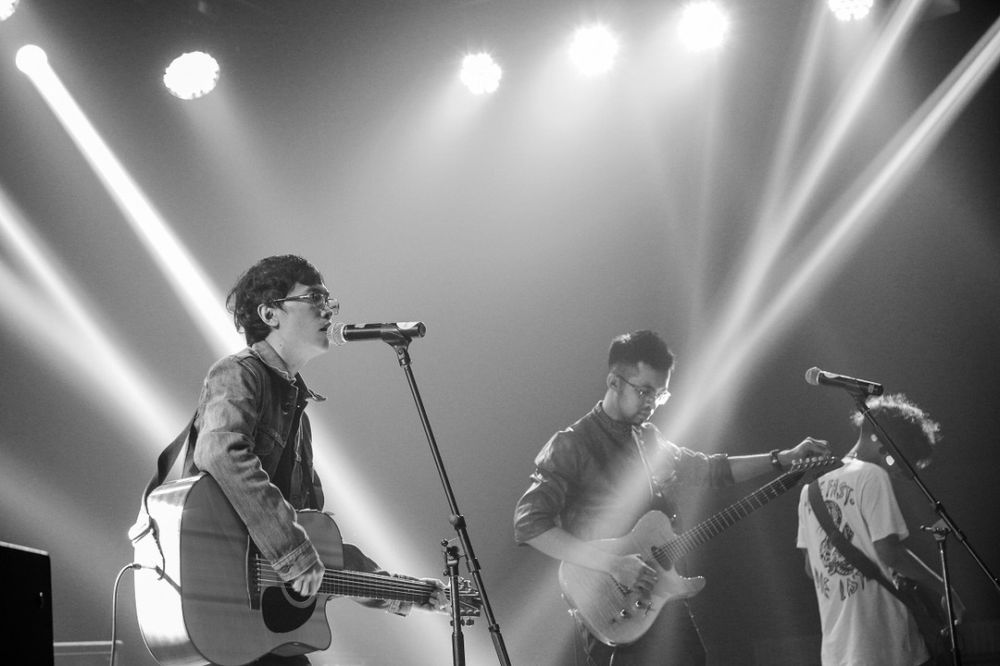

Cá Hồi Hoang là một ban nhạc Indie (độc lập), tự sáng tác và biểu diễn các ca khúc của mình. Những ca khúc của Cá Hồi Hoang được xem là một giọng điệu lạ, nhiều cá tính trong thị trường âm nhạc hiện nay.
Cá Hồi Hoang được thành lập từ tháng 9.2013 với hai thành viên Nguyễn Viết Thành (frontman, hát chính) và Nguyễn Thanh Minh (trưởng nhóm, guitarist, hát bè). Trước đó, với tình yêu dành cho âm nhạc, hai chàng trai trẻ cùng những người bạn của mình thành lập nhóm nhạc học sinh Dép Tổ Ong (2007). Sau 5 năm hoạt động với hai album phòng thu Tất cả chỉ là bắt đầu và Bản thu hỏng, ban nhạc này tan rã vì mâu thuẫn giữa các thành viên. Thành và Minh tiếp tục hoạt động âm nhạc với cái tên mới Cá Hồi Hoang và đã có cho mình album debut mang tên Chương II vào năm 2014.
Giải thích về tên gọi Cá Hồi Hoang, nhóm cho biết hình ảnh cá hồi ngược dòng nước gợi lên sự cá tính, mạnh mẽ, khi kết hợp với từ hoang (gợi lên sự đơn độc nhưng đầy nghị lực), cái tên tạo nên một cái gì đó ''rất điên, rất nghênh'' vừa phù hợp với phong cách âm nhạc mà nhóm theo đuổi, vừa gợi nhắc tất cả những thăng trầm mà nhóm đã trải qua.